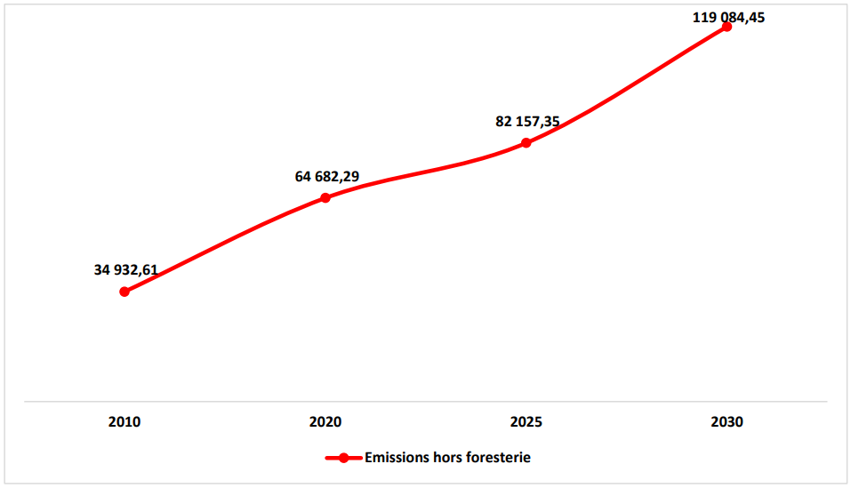
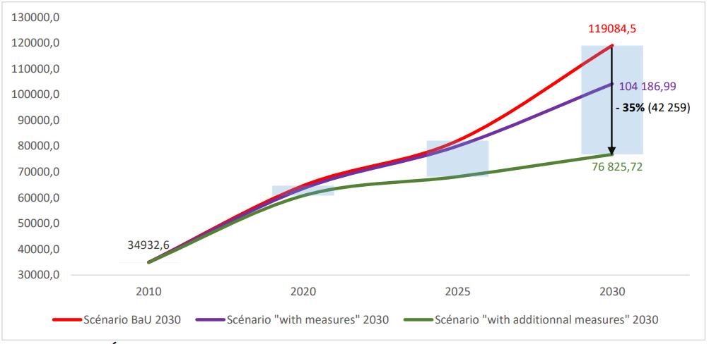

République du Cameroun CDN Révisée 2021
REPUBLIQUE DU CAMEROUN
Paix-Travail-Patrie
CONTRIBUTION DETERMINEE AU NIVEAU NATIONAL - ACTUALISEE (CDN)
NATIONALLY DETERMINED CONTRIBUTION- UPDATED (NDC)
Septembre 2021
|
°C |
Degré Celsius |
|
APRUE |
Agence de Promotion et de Rationalisation de l’Utilisation des Energies |
|
BaU |
Business as Usual |
|
BRT |
Bus Rapid Transit |
|
BUR |
Rapport Biennal Actualisé |
|
CC |
Changements Climatique |
|
CCNUCC |
Convention Cadre des Nations Unies sur les Changements Climatiques |
|
CDN |
Contribution Déterminée au Niveau National |
|
CH4 |
Méthane |
|
CMA |
Conference of the Parties Serving as the meeting of the Parties to the Paris Agreement |
|
CN |
Communication Nationale |
|
CNCC |
Comité National sur les Changements Climatiques |
|
CO2 |
Dioxyde de Carbone |
|
COP |
Conférence des Parties |
|
CPDN |
Contribution Prévue Déterminée au niveau National |
|
CTD |
Collectivité Territoriale Décentralisée |
|
CVUC |
Communes et Villes Unies du Cameroun |
|
DFnP |
Domaine Forestier non Permanent |
|
DFP |
Domaine Forestier Permanent |
|
DSPL |
Déclaration de Stratégie de Lutte contre la Pauvreté |
|
EE |
Efficacité Energétique |
|
ENR |
Energie Renouvelable |
|
FAO |
Organisation des Nations Unies pour l’Alimentation et l’Agriculture |
|
FCFA |
Francs de la Communauté Financière Africaine |
|
FEICOM |
Fonds Spécial d’Equipement et d’Intervention Intercommunal |
|
GES |
Gaz à Effet de Serre |
|
GgEqCO2 |
Giga gramme Equivalent CO2 |
|
GIEC |
Groupe Intergouvernemental des Experts sur l’Evolution du Climat |
|
GW |
Giga Watt |
|
Ha |
Hectare |
|
HFC |
Hydrofluorocarbure |
|
IGES |
Inventaire des Gaz à Effet de Serre |
|
Km |
Kilomètre |
|
kW |
Kilowatt |
|
LED |
DEL (Diode Electroluminescente) |
|
MINAC |
Ministère des Arts et de la Culture |
|
MINAS |
Ministère des Affaires Sociales |
|
MINAT |
Ministère de l’Administration Territoriale |
|
MINCOMMERCE |
Ministère du Commerce |
|
MINDCAF |
Ministère du Cadastre et des Affaires Foncières |
|
MINDDEVEL |
Ministère de la Décentralisation et du Développement Local |
|
MINDEF |
Ministère de la Défense |
|
MINEDUB |
Ministère de l’Education de Base |
|
MINEFOP |
Ministère de l’Emploi et de la Formation Professionnelle |
|
MINEPAT |
Ministère de l’Economie de la Planification et de l’Aménagement du Territoire |
|
MINEPDED |
Ministère de l’Environnement de la Protection de la Nature et du Développement Durable |
|
MINESEC |
Ministère des Enseignements Secondaires |
|
MINESUP |
Ministère de l’Enseignement Supérieure |
|
MINFI |
Ministère des Finances |
|
MINFOPRA |
Ministère de la Fonction Publique et de la Réforme Administrative |
|
MINHDU |
Ministère de l’Habitat et du Développement Urbain |
|
MINJEC |
Ministère de la Jeunesse et de l’Education Civique |
|
MINJUSTICE |
Ministère de la Justice |
|
MINMAP |
Ministère des Marchés Publics |
|
MINMIDT |
Ministère des Mines de l’Industrie et du Développement Technologique |
|
MINPMEESA |
Ministère des Petites et Moyennes Entreprises, de l’Economie Sociale et de l’Artisanat |
|
MINPOSTEL |
Ministère des Postes et Télécommunications |
|
MINPROFF |
Ministère de la Promotion de la Femme et de la Famille |
|
MINRESI |
Ministère de la Recherche Scientifique et de l’Innovation |
|
MINREX |
Ministère des Relations Extérieures |
|
MINSEP |
Ministère des Sports et de l’Education Physique |
|
MINTSS |
Ministère du Travail et de la Sécurité Sociale |
|
MNV |
Mesure, Notification, Vérification |
|
MRV |
Monitoring, Reporting, Verification |
|
MW |
Méga Watt |
|
N2O |
Protoxyde d’Azote |
|
NDC |
Nationally Determined Contribution |
|
ODD |
Objectifs de Développement Durable |
|
ONACC |
Observatoire National sur les Changements Climatiques |
|
ONG |
Organisation Non Gouvernementale |
|
OSC |
Organisation de la Société Civile |
|
PCD |
Plan Communal de Développement |
|
PIB |
Produit Intérieur Brut |
|
PIUP |
Procédés Industriels et Utilisation des Produits |
|
PM |
Premier Ministre |
|
PNACC |
Programme National d’Adaptation au Changement Climatique |
|
PV |
Photo Voltaïque |
|
RBT |
Rapport Biennal de Transparence |
|
SDN30 |
Stratégie Nationale de Développement à l’horizon 2030 |
|
SNIGES |
Système National d’Inventaire des Gaz à Effet de Serre |
|
SPAND |
Stratégie et Plan d’Action National pour la Biodiversité |
|
TCN |
Troisième Communication Nationale |
|
TdC |
Théorie du Changement |
|
UP |
Unité de Production |
|
USD |
Dollar Américain |
|
ZAE |
Zone Agroécologique |
|
Synthèse des éléments de compréhension de la CDN 2021 |
|
|
Type d’engagement |
Réduction des GES par scénario conditionnel et inconditionnel |
|
Périmètre et GES couverts |
Ensemble du territoire national CO2, CH4, N2O, HFC, PFC et SF6 Avec pour principaux cibles les 3 premiers |
|
Période couverte |
2020 - 2030 |
|
Année de référence (année de base) |
2010 |
|
Niveau d’engagement ou de réduction des émissions de GES |
Le niveau de réduction de GES à l’horizon 2030 est de 35% réparti ainsi qu’il suit :
|
|
Secteurs prioritaires couverts |
|
|
Potentiel de Réchauffement Global (PRG) |
|
|
Méthodologies de l’estimation des émissions |
|
|
Coût de mise en œuvre |
|
Le Cameroun a soumis sa CPDN auprès du Secrétariat de la CCNUCC en octobre 2015 et ratifié l’Accord de Paris en janvier 2016. De fait, ce document est considéré comme la première CDN du Cameroun, décrivant les objectifs de réduction des émissions de Gaz à Effet de Serre (GES) accompagnés de propositions de mesures d’adaptation.
A travers le présent document, le Gouvernement du Cameroun présente une actualisation de sa première Contribution Déterminée au niveau National (atténuation et adaptation), pour la période 2020 - 2030 et conformément aux articles 4.2, 4.9 et 4.11 de l’Accord de Paris et autres dispositions pertinentes de l’Accord.
Le contenu de cette soumission s'appuie sur l’examen des progrès réalisés au titre de la première CDN, les nouvelles politiques telles que la SND30, les plans nationaux et sectoriels, et reflètent les travaux ultérieurs concernant l'élaboration d’objectifs quantifiables d'atténuation et d'adaptation. Ce document représente une synthèse robuste qualifiée par des évaluations détaillées et pertinentes des mesures d'atténuation et des mesures d'adaptation. Ces évaluations sont complétées et soutenues par une analyse approfondie, des informations et données contextualisées, un processus inclusif de consultation des parties prenantes, en ciblant une ambition climatique accrue.
A travers la révision de sa CDN, le Cameroun entend réduire l’empreinte carbone de son développement 35% à l’horizon 2030, avec 2010 comme année de référence, sans pour autant ralentir sa croissance, tout en privilégiant des options d’atténuation présentant des cobénéfices élevés, en renforçant la résilience du pays aux changements climatiques, et en mettant en cohérence ses politiques sectorielles, y compris le renforcement de son dispositif et des outils de mise en œuvre, afin de faciliter l’atteinte de ces objectifs.
Le Cameroun au sein du Bassin du Congo comprend des écosystèmes représentatifs du continent africain, qui le qualifie d’Afrique en miniature. Le territoire couvre une superficie de 475 650 km2, et il s’étire sur 1 500 km du Sud au Nord (2-13°N) et de 800 km d’Ouest en Est (9-16°E). , et un taux de croissance
démographique annuel de 2,5%. Ce taux atteint 4,3% dans les villes. L’urbanisation anarchique est l’un des phénomènes les plus remarquables de ces dernières années. Ainsi le taux d’urbanisation est passe de 52% en 2010 à 57% en 2019. 50% de la population camerounaise vit dans des quartiers d’habitats précaires, souvent illégaux.
Au plan climatique, sa large extension en latitude lui vaut de passer d’une pluviométrie monomodale déficitaire en zone agroécologique (ZAE) sahélienne (500 à 800 mm) à une pluviométrie monomodale (1800 à 2800 mm) en ZAE hautes savanes et hauts plateaux, une pluviométrie bimodale relativement abondante (1500 – 2000 mm) en ZAE forestière et une importante pluviométrie monomodale (3000 – 8000 mm) en ZAE littorale. La température elle-même varie d’un milieu à l’autre et se situe entre 20°C et 35 °C avec une amplitude thermique allant de 3°C à plus de 12°C
Au plan biologique, le Cameroun compte six (06) principaux types d’écosystèmes, avec une grande diversité des systèmes de production agro- pastorale. La flore est dominée par la steppe et les Yaérés à l’Extrême-Nord, la savane dans le Nord, l’Adamaoua et les hautes terres de l’Ouest, les forêts semi- décidues dans le Centre – Sud, puis les forêts sempervirentes et les mangroves en zone côtière. Le Cameroun occupe le quatrième rang en matière de richesse de la flore et le cinquième en termes de diversité faunique en Afrique avec 8300 espèces de plantes, 335 espèces de mammifères (SPANB II, 2012).
Par ailleurs, ce patrimoine floristique et faunique fait l’objet de menace multiples, parmi les plus importantes il faut relever, l’exploitation forestière, faunique et minière illégale et anarchique, l’utilisation des terres non contrôlée pour l’agriculture itinérante sur brûlis et le développement non durable de l’agro- industries). Le taux annuel net de déforestation estimée à 0,6% (FAO, 2020) couplé à un faible taux de reboisement (0,1%) suggère une diminution croissante de la diversité biologique.
La contribution de la déforestation aux changements climatiques et à la vulnérabilité des populations locales et autochtones est indéniable. Le Cameroun possède un massif forestier important qui est de plus en plus dégradé par les activités agropastorales ainsi que les projets miniers et structurants auxquels
s’ajoute une croissance démographique importante. En effet, la population camerounaise en 2021 est estimée à environ 27 millions d’habitants avec une densité moyenne de 56 hts/km2, qui toutefois varie de 7 à 200 habitants/km2 suivant les régions du pays.
Cette densité disparate constitue un déterminant majeur de la dégradation des terres arables et des paysages forestiers, fortement marquée dans la partie septentrionale et les hautes terres de l’Ouest. Or, la majorité de la population rurale du Cameroun est dépendante des moyens de subsistance des activités agricoles et pastorales dans un contexte où la productivité des paysages et des terres est de moins en moins bonne, avec un risque d’intensification de l’exode rural.
La problématique de la dégradation des paysages forestiers est réelle dans tout le pays, mais très variée d’une zone agroécologique à l’autre. Dans une optique de durabilité forte, le renouvellement des ressources forestières et la reconstitution des formations végétales dégradées, compte probablement parmi les défis majeurs actuels auxquels le Cameroun est appelé à faire face dans les prochaines décennies, avec l’amplification des bouleversements environnementaux et des changements climatiques.
Les défis inhérents à ceux-ci concernent la déforestation, l’accroissement du potentiel érosif des cours d’eau et l’augmentation des inondations et des glissements de terrain qui induisent une nouvelle dynamique au paysage avec l’accélération des processus géomorphologiques. Dès lors, il en résulte des risques environnementaux importants.
La sécheresse demeure discrète et omniprésente dans la partie septentrionale du pays. C’est un facteur contraignant pour les populations et un déclencheur - amplificateur des maladies qui exposent plus de 3 000 000 d’âmes (Etude de la vulnérabilité du Cameroun, 2021).
La fréquence saisonnière et quasi ininterrompue depuis deux décennies des évènements climatiques extrêmes, l’instabilité de la durée des saisons des pluies, les inondations récentes, les sécheresses récurrentes auxquelles le Cameroun est de plus en plus exposé, prouvent que les changements climatiques ont cessé d’être une question purement scientifique et sont devenus un problème réel et prégnant pour notre société, requérant des mesures urgentes pour la sauvegarde et la protection de la vie humaine.
Au plan économique, il est important de relever que l’économie du Cameroun est l’une des plus diversifiée d’Afrique. Bien que les secteurs secondaire (22% du PIB) et tertiaire (45%) soient bien développés, l’économie repose néanmoins principalement sur des secteurs de production: agriculture, élevage, pêche et aquaculture, foresterie et sylviculture. L’agriculture emploie près de 60% de la population et demeure le secteur prédominant de l’économie nationale tant par sa contribution au PIB (23%) que pour les effets d’entrainement sur d’autres secteurs d’activités. Les principales cultures commerciales sont le cacao, le café, le tabac, le coton, les bananes et le poivre.
La contribution du secteur minier au PIB reste négligeable malgré d’importantes potentialités identifiées et mises en exploitation. Le Cameroun renferme au moins 52 types de ressources minérales et la stratégie s’appuie sur la valorisation d’au moins 30 % de ces ressources. Les activités minières concernent l’exploration, l’exploitation et la transformation.
Le secteur industriel représente près du tiers du PIB. Il produit essentiellement pour le marché local.
|
Continent |
|
|
Sous - Région |
|
|
Coordonnées |
2° - 13° latitude Nord, 9° - 16° longitude Est |
|
Superficie |
|
|
Côtes |
400 km |
|
Frontières |
Centrafrique 822 km (Est), Tchad 1 122 km (Est et Nord-Est), République du Congo 520 km (Sud-Est), Guinée équatoriale 183 km (Sud), Gabon 298 km (Sud), Nigeria 1 720 km (Ouest et Nord- Ouest) |
|
Altitude maximale |
4 095 m (Mont Cameroun) |
|
Altitude minimale |
|
|
Plus long cours d’eau |
Sanaga (900 km) |
|
Plus importante étendue d’eau |
De prime à bord, il faut noter que la contrainte climatique exerce déjà une pression accrue sur les principaux secteurs alimentant le budget national, elle accroit les vulnérabilités sociales et contribue à dégrader les infrastructures nécessaires à l’activité économique. Par ailleurs, la lutte contre les effets du changement climatique révèle aussi bien pour l’adaptation que pour l’atténuation, des besoins de ressources financières additionnelles en plus de ceux nécessaires aux impératifs déjà connus du développement. Pour réussir la mutation transformationnelle vers une économie sobre en carbone, il faut des investissements conséquents pour la mise en place des technologies appropriées, en ciblant tous les secteurs à enjeux. Les financements nécessaires soutiendront la mise en œuvre des programmes et projets en cohérence avec les engagements pris en respectant une distribution tenant compte des secteurs les plus émetteurs et les zones agro écologiques les plus vulnérables.
A cet effet, la Stratégie Nationale de Développement 2020-2030 du Cameroun doit absolument être mise en perspective dans le cadre de la révision de cette CDN. La raison en est simple, le pays envisage une profonde transformation structurelle de son économie dont la croissance doit être proche de deux chiffres.
Ceci passe par une stratégie d’industrialisation reposant sur une transformation accrue des ressources naturelles et une réduction graduelle des importations en faveur des exportations des produits manufacturés ou semi finis. Cette ambition porte prioritairement sur le marché de la Communauté Economique des Etats de l’Afrique Centrale (CEEAC) estimé à environ 300 millions d’habitants. La conséquence prévisible de cette orientation stratégique dans le cas d’un business as usual est une pression sans précédent sur les ressources édaphiques, hydriques et la biomasse aussi bien en ce qui concerne les prélèvements que les dégradations dues aux pollutions et plus particulièrement aux émissions des gaz à effet de serre.
Pour concilier ses ambitions légitimes de croissance économique avec les impératifs de lutte contre le réchauffement et tenir ses engagements pris dans le cadre de sa CDN, le Gouvernement a consacré un des objectifs globaux de la SND30 à la lutte contre le changement climatique : « Renforcer les mesures d’adaptation et d’atténuation des effets du changement climatique et la gestion
environnementale pour garantir une croissance économique et un développement social durable et inclusif ».
Ainsi, s’agissant du secteur de l’énergie, le pays entend poursuivre sa politique de développement d’un mix énergétique basé sur l’énergie hydroélectrique, le photovoltaïque, le thermique à base de gaz et l’énergie issue de la biomasse. Pour le secteur rural, le Gouvernement a opté pour une politique d’intensification promouvant les technologies les plus innovantes, climato résilientes notamment. S’agissant des déchets, il est prévu la mise en œuvre d’une stratégie nationale des déchets dans le sillage de la promotion de la responsabilité sociétale des entreprises.
Comme les autres pays d’Afrique centrale situé autour du Golfe de Guinée, le Cameroun a d’importants gisements de pétrole offshore et on shore dont la plupart ne seraient pas encore découverts. Il envisage d’accentuer ses efforts de prospection pour accroître ses réserves et augmenter sa production de pétrole et de gaz en mettant l’accent sur les nouveaux bassins on shore de la partie septentrionale du pays notamment (P. 45). 1 L’exploitation de certains bassins a été différée en raison de la chute du prix du baril du pétrole. Afin de tenir ses engagements pris dans le cadre de sa CDN, le Cameroun doit absolument attirer des investisseurs pour explorer et développer des projets structurants portant sur l’hydroélectricité, le gaz et d’autres énergies propres à l’instar de l’hydrogène et de l’ammoniac.
Pour ce qui est du sous-secteur forestier, les forêts du bassin du Congo dont environ 12% de la superficie se trouve au Cameroun ont un rôle vital de régulation des GES et du dioxyde de carbone, ceci en plus de jouer un rôle déterminant sur la régulation du climat régional et le cycle de l’eau. Pour que ce massif forestier continue de jouer ce rôle primordial pour l’humanité, la communauté internationale doit sans délai redéployer avec plus de détermination et de méthode, les différents instruments à même de contribuer efficacement aux efforts d’atténuation et d’adaptation. Plus que certains pays de la Sous-région le soutien dont a besoin le Cameroun pour tenir ses engagements pris dans le cadre de sa CDN est déterminant.
Alors que le taux de croissance de la population urbaine du continent était de 5,4% en 2015, l’Afrique centrale présentait quant à lui un taux de 6,2%. Ces chiffres impliquent au moins deux défis : le premier est de la sécurité alimentaire d’une population urbaine dont les besoins en produits vivriers croissent rapidement. Dans son rôle de grenier incontesté de l’Afrique Centrale, le Cameroun exerce plus que les autres pays de la Sous-région une forte pression sur ses ressources naturelles et sa biomasse pour continuer de satisfaire à la demande croissante en vivres de son marché intérieur mais aussi de ceux des pays voisins.
S’agissant du sous-secteur de la mine solide, avec la création récente de la SONAMINES, on pourrait lire la volonté du Gouvernement de développer enfin ce sous-secteur. 2 La du minerai de fer est constitué essentiellement par le gisement de Nkout estimé à 2 milliards de tonnes extensible à 4 milliards d’une part et du bassin de fer de Mbalam dont la capacité de production annuelle serait de 40 millions de tonnes sur 12 ans dans sa première phase de développement. Les réserves de rutile du pays seraient évaluées à 3 millions de tonnes, soit le second potentiel mondial après la Sierra Leone. S’agissant du minerai de l’alumine, le cinquième des plateaux bauxitiques explorés en 2020 par « Canyon Resources » affiche des réserves estimées à 892 millions de tonnes dont 250 Millions à très haute teneur d’aluminium.
Si le pays mettait en œuvre sans autre forme de procès ces grands projets miniers, les conséquences sur l’environnement, en dépit des mesures habituelles de mitigation des impacts, seraient considérables. Il est à noter que plus de 70% des réserves minières du pays se trouvent en domaine forestier. Les partenaires techniques et financiers du Cameroun devraient le soutenir afin de que des moyens conséquents soient mobilisés pour mettre en place des techniques d’exploitation les moins préjudiciables possibles à l’équilibre des forêts.
Deux autres défis exacerbent les vulnérabilités du Cameroun. Au plan des milieux physiques, il faut relever la situation critique des régions septentrionales du pays face aux changements climatiques. Ceci se traduit par des sécheresses récurrentes et divers phénomènes climatiques extrêmes. Ainsi, dans la seule région de l’Extrême-nord, souffre d’un déficit céréalier de 30 000 tonnes, le taux d’insécurité alimentaire y est de 33,6 %. La présence des réfugiés (57 000) et déplacés (223 642) exercent en outre une forte pression sur les ressources naturelles tels que les points d’eau et pâturages (SNADDT, Diagnostic 2018). Les implications socioéconomiques de ces vulnérabilités sont multiples. Pour répondre aux crises conjoncturelles induites, l’Etat consacre logiquement l’essentiel de ses modestes ressources financières aux problèmes sociaux en lien avec la santé, la sécurité alimentaire et les situations d’urgence post-catastrophe.
Tant que la résilience des régions soudano sahéliennes du pays et dans une moindre mesure celle des régions de l’Ouest et du Nord-Ouest ne sera pas significativement améliorée, les ressources propres de l’Etat nécessaires pour adresser les défis liés au changement climatique ne pourront pas répondre aux défis en présence.
Au plan sécuritaire, il est connu que le Cameroun fait face à l’instabilité dans deux zones agroécologiques les plus exposées aux effets du changement climatique, la région de l’Extrême-Nord en proie aux attaques de la secte Boko Haram et les régions du Nord-Ouest et du Sud-Ouest secoués par les exactions des séparatistes anglophones. Les ressources financières mobilisées par l’Etat pour restaurer la paix dans ces régions où l’instabilité tend à devenir endémique ont largement contribué à éroder la résilience de l’économie du pays. La crise sanitaire actuelle est venue accentuer la fragilisation d’une économie déjà déstabilisée par les effets conjugués du changement climatique et des crises sécuritaires. Sans une très forte volonté politique et un soutien international à la mesure des défis sus analysés, les engagements du pays pris dans le cadre de sa CDN pourraient ne pas être tenus.
Au vu du tableau ci-dessus présenté, le pays envisage donc de mobiliser à cet effet tous les moyens conséquents pertinents : financements, transferts de technologies et renforcement de capacités pour tenir ses engagements internationaux et atteindre ses objectifs de développement socioéconomiques.
La vision du Cameroun dans sa stratégie de réponse inclusive aux impacts du changement climatique se résume dans le slogan : « transformer la contrainte climatique en opportunités de développement ».
Dans le cadre de l’adaptation, la vision du Cameroun selon son Plan National d’adaptation aux Changements Climatiques (PNACC) stipule qu’en 2035, « les changements climatiques dans les cinq zones agro-écologiques du Cameroun sont complètement intégrés au développement durable du pays, réduisant ainsi sa vulnérabilité, et transformant même le problème des changements climatiques en une solution/opportunité de développement. Ainsi les camerounais particulièrement les femmes, les enfants et les personnes vulnérables et les secteurs économiques du pays acquièrent une plus grande résilience et une plus grande capacité d’adaptation aux impacts négatifs des changements climatiques ».
Cette vision est fondée sur la théorie du déterminisme inverse consistant à admettre que des transformations socioéconomiques structurelles positives peuvent avoir pour déclencheurs le souci concerté de vaincre des contraintes du milieu physique. Les changements climatiques peuvent donc constituer une réelle opportunité à capitaliser en faveur de la transition vers une économie verte, de la lutte contre la pauvreté, mais au-delà renforcer le ciment social par le jeu de solidarités sociales nécessaires en vue de la réduction des vulnérabilités différentielles.
Pour concilier ses ambitions légitimes de croissance économique en tant compte des impératifs pour inverser les effets négatifs des changements climatiques et tenir les engagements pris dans le cadre de sa CDN, le Gouvernement a consacré un des objectifs globaux de la SND30 à la lutte contre les changements climatiques : « Renforcer les mesures d’adaptation et d’atténuation des effets du changement climatique et la gestion environnementale pour garantir une croissance économique et un développement social durable et inclusif ».
En considérant à la fois les objectifs d’atténuation et d’adaptation, les politiques et les outils règlementaires de mise en œuvre y afférents nécessitent à la fois des adaptations, des renforcements et des créations nouvelles. Ces politiques doivent autant que faire se peut prendre en compte la contrainte climatique dans la conception et l’élaboration des politiques de développement en général.
4.1 Émission nationale de gaz à effet de serre
En 2010, le secteur de l’agriculture demeure la plus importante source d’émissions de GES avec 24074.61 Gg Eq CO2 soit 69 % des émissions totales (Fig.1). Le secteur de l’Energie en seconde position, présente 18 % des émissions, suivi du secteur des déchets avec 12 %. Le secteur des procédés industriels et utilisation des produits (PIUP) vient en dernier lieu avec 1 %. (Rapport national IGES TCN, 2020).
La figure 2 illustre les différents gaz à effet de serre (GES) par secteur source

4.2 Scénario Business As Usual (BAU)
Pour le Cameroun, dans un scénario Business As Usual (BAU), les émissions de GES atteignent 119 085 Gg Eq CO2 en 2030, soit une hausse de 71% par rapport à 2010 année de base où les émissions sont de l’ordre de 34 933 Gg Eq CO2 (Fig.3).

4.3 Portée et couverture des actions d’atténuation
Dans le scénario CDN avec prise en compte des mesures, l’augmentation des émissions est contenue à 104 187 Gg Eq CO2 en 2030 soit une hausse de 66 % par rapport à 2010 (34 933 Gg Eq CO2) et une réduction de 12 % par rapport au scénario BAU.
Dans ce même scénario, mais cette fois avec mesures additionnelles, l’augmentation des émissions est contenue à 76 826 Gg Eq CO2 en 2030 soit une augmentation de 55 % par rapport à 2010 et une réduction de 35 % par rapport au scénario BAU ce qui représente en valeur absolue 42 259 Gg Eq CO2 de réduction (Fig.4).

Les parts de réduction de chaque secteur en 2030 sont présentés dans le tableau ci-dessous :
Tableau 1 : Part de réduction par secteur en 2030
|
Part de Réduction par secteur en 2030 |
|||||
|
Secteurs |
Agriculture |
FAT |
Energie |
Déchets |
Totaux |
|
Réduction en quantité (Gg Eq CO2) |
6808.48 |
19378.63 |
13369.85 |
2701.78 |
42258.73 |
|
Part de chaque secteur dans la réduction totale (%.) |
16.1% |
45.9% |
31.6% |
6.4% |
100.0% |
|
Part de chaque secteur par rapport au pourcentage de réduction (%.) |
5.7% |
16.3% |
11.2% |
2.3% |
35.5% |
En termes de potentiel de réduction le secteur de la foresterie vient en tête, suivi de l’Energie
4.4 Les actions d’atténuation retenues
Le Cameroun entend mettre en œuvre les actions d’atténuation ci-dessous, sur la base des orientations et options de réduction en cohérence avec les piliers de sa stratégie nationale de développement 2020-2030 (SND30) et les ODD.
|
Agriculture/Pêche/Élevage/Forêt
|
||
|
Orientations par rapport à la SND 30 |
Actions d’atténuation retenues |
Options de réduction retenues |
|
1) Mise en cohérence de la planification et de l’aménagement de l’espace rural pour développer l'agriculture tout en limitant la déforestation/dégradation |
-Aménagement durable des espaces rural et urbain ; - Renforcement de la gestion durable et la valorisation des forêts et de la biodiversité, notamment grâce au suivi spatial des terres ; -Réhabilitation des terres dégradées et le reboisement des savanes anthropiques, et renforcement des puits de carbone dans les forêts dégradées. |
|
|
2) Intensification d'une production agricole, animale et halieutique respectueuse de l'environnement et permettant de limiter la déforestation / dégradation |
|
Réduction du CH4 des cultures de riz |
|
3) Promotion des pratiques permettant d'améliorer les capacités de production agricole et valoriser les ressources du milieu |
|
|
|
Energie/Déchets
|
||
|
Orientations par rapport à la SND 30 |
Actions d’atténuation retenues |
Options de réduction retenues |
|
4) Maitrise de la consommation énergétique des systèmes par une politique d'efficacité́ énergétique volontariste |
|
|
|
5) Valorisation efficiente des ressources pour tendre vers une économie circulaire |
|
|
|
6) Développement de la production d'énergie à partir de sources renouvelables |
|
|
4.4 Informations sur les efforts d’atténuation
Le scénario des mesures inconditionnelles d’atténuation comprend des options de réduction sur lesquelles le Cameroun s’engage dans le cadre de sa Contribution Déterminée au niveau National (CDN) tenant compte de son contexte national et de ses capacités internes. L’objectif inconditionnel se traduit, en termes absolus pour 2030, par des émissions à hauteur de 104 187 Gg Eq. CO2. L’ensemble des mesures inconditionnelles, d’un coût d’environ 25 784,66 millions USD, permettent de réduire les émissions projetées pour l’année 2030 de 14 898 Gg Eq. CO2, soit 12 % des émissions dans le scenario BAU 2030.
Objectif Global (mesures inconditionnelles et conditionnelles)
La CDN révisée du Cameroun, présente un objectif d’atténuation global de 35 % avec 32 options de réduction dans les secteurs cibles (mesures inconditionnelles et conditionnelles) à l’horizon 2030 par rapport au scénario de référence (BAU 2030). Ce nouvel objectif de réduction indique la volonté du pays à revoir à la hausse son ambition d’atténuation par rapport à la première version de la CDN (objectif de 32% de réduction). Il se traduit, en termes absolus pour 2030, par des émissions réduites de 14 898 Gg Eq CO2 (inconditionnelles) et un surplus de réduction de 27 361 Gg Eq C02 (conditionnées) si le Cameroun reçoit l’appui nécessaire pour la mise en œuvre des mesures additionnelles proposées.
|
1. Informations quantifiées sur le point de référence, y compris, le cas échéant, une année de base |
||
|
Type de contribution |
Un objectif de réduction des émissions assorti d’actions d’atténuation et d’adaptation |
|
|
Objectif national à long terme sur les Émissions de GES |
Réduction des émissions de GES à hauteur de 35% par rapport à un scénario de référence pour l’année cible 2030 et reparti en 12% inconditionnel et 23% conditionné au soutien de la communauté internationale sous forme de financement, d’actions de renforcements de capacité et de transfert de technologies. |
|
|
Année cible |
2030 |
|
|
Année de référence |
2010 |
|
|
Objectif Stratégie Nationale de Développement 2020-2030 |
Croissance économique et transformation structurelle (porter le taux de croissance annuel de 4,5% à 8,1% en moyenne sur la période 202-2030 ; ramener le déficit de la balance commerciale de 8,8% du PIB en 2018 à 3% en 2030) ; réduction de la pauvreté et du sous-emploi (ramener le taux de pauvreté de 37,5% en 2014 à moins de 25% en 2030) ; préservation environnementale et maitrise des risques climatiques (renforcer les actions en matière de gestion durable des ressources naturelles, renforcer les mesures d’adaptation et d’atténuation des effets des changements climatiques et la gestion environnementale pour garantir une croissance économique et un développement durable et inclusif) ; renforcement de la Gouvernance (renforcer la performance de l’action publique en vue de l’atteinte des objectifs de développement). |
|
|
Objectifs sectoriels principaux |
Scénario CDN : (i) verdissement (intensification, sédentarisation) de la politique agricole ; (ii) gestion durable des forêts (iii) augmentation de l’offre énergétique et amélioration de l’efficacité énergétique; (iv) 25% d’énergie renouvelable dans le bouquet électrique à l’horizon 2035. |
|
|
Ambition de la Contribution |
L’objectif de réduction des émissions du Cameroun représente un effort significatif pour un pays dont les émissions restent insignifiantes à l’échelon international et dont le PIB par habitant se situe au 99ème rang mondial et 16ème rang en Afrique (2020, Banque Mondiale). |
|
|
Équité de la Contribution |
L’augmentation des ambitions de réduction de 35% des émission d’ici à 2030 est du même ordre ou supérieure à celle proposée par des pays comparables ou de la sous- région. Ce niveau d’engagement tient compte des efforts accomplis ou en cours pour réduire les émissions / augmenter les puits de carbone (reboisement, gestion durable des forêts). |
|
|
Informations quantifiables sur les indicateurs de référence, leurs valeurs dans la ou les année(s) de référence, année(s) de base, période(s) de référence ou autre(s) point(s) de départ et, le cas échéant, dans l’année cible. |
L’indicateur de référence est quantifié sur la base des émissions nationales totales de gaz à effet de serre (GES). Pour l’année de référence 2010, Le niveau d’émission de l’année de référence est de 34933Gg eq CO2. |
|
|
Pour les stratégies, plans et actions visés au paragraphe 6 de l’article 4 de l’Accord de Paris, où les politiques et mesures en tant qu’éléments de contributions déterminées au niveau national lorsque le |
Une réduction nette des émissions de GES à l’échelle de l’économie de 12% en 2030 par rapport au scénario Bisness as Usual (BaU), avec des financements internes du pays. Avec un soutien international conséquent le Cameroun pourrait aller jusqu’à une réduction des émissions de 35% par rapport au scenario Business as Usual (BaU). |
|
|
paragraphe 1 (b) ci-dessus n’est pas applicable, les Parties doivent fournir d’autres informations pertinentes. |
||
|
Cible par rapport à l’indicateur de référence, exprimée numériquement, par exemple en pourcentage ou en quantité de réduction. |
N/A |
|
|
Informations sur les sources de données utilisées pour quantifier le (s) point (s) de référence. |
La quantification des indicateurs de référence a été faite à partir des données de l’inventaire national des émissions des GES élaboré en suivant les méthodologies et les lignes directrices du GIEC de 2006 dans le cadre de la troisième Communication Nationale sur les changements climatiques (TCN). Il est utile d’indiquer que les informations sur les indicateurs de références peuvent être mis à jour et recalculées en raison d’améliorations méthodologiques continues ou mise à dispositions d’informations pertinentes non disponibles avant. Les informations sur les mises à jour effectuées seront reportées dans les rapports de la CCNUCC notamment dans les rapports biennaux sur la transparence et ce à partir de 2024, |
|
|
2. Délais et/ou délai de mise en œuvre |
||
|
a. Calendrier et/ou période de mise en œuvre, y compris les dates de début et de fin, conformément à toute autre décision pertinente adoptée par la CMA. |
2020-2030 |
|
|
b. Qu’il s’agisse d’un objectif annuel ou pluriannuel, selon le cas |
2030 |
|
|
3. Périmètre et couverture |
||
|
a. Description générale de l’objectif d’atténuation |
Engagement inconditionnel de réduction des émissions de GES de 12% (14898 Gg Eq CO2) en 2030 comparé au scenario BAU avec les niveaux de soutien international en vigueur en 2020 augmenté à 35% (42259Gg Eq CO2) avec un soutien international plus important. |
|
|
b. Secteurs, gaz, catégories et bassins couverts par la contribution déterminée au niveau national, y compris, le cas échéant, conformément aux lignes directrices du GIEC. |
La CDN du Cameroun concerne l’ensemble de l’économie. Elle reflète toutes les Émissions et les absorptions anthropogéniques telles que rapportées dans la Troisième communication nationale et le premier rapport biennal comme définis par les lignes directrices 2006 du GIEC pour les secteurs Agriculture, Foresterie et Autres Affectations des Terres (AFAT), Énergie, Procédés Industriels et Utilisation Des Produits (PIUP) et Déchets. Les principaux gaz concernés sont les gaz à effet de serre inclus dans les lignes directrices 2006 du GIEC notamment CO2, CH4, N2O. |
|
|
c. Comment le pays Partie a tenu compte des paragraphes 31 c) et d) de la décision 1 / CP.21. |
La CDN Cameroun concentre son intervention sur les secteurs ayant un grand potentiel d’atténuation. |
|
|
d. Co-avantages d’atténuation résultant des mesures d’adaptation et / ou des plans de diversification économique des Parties, y compris la description des projets, mesures et initiatives spécifiques des mesures d’adaptation et / ou des plans de diversification économique des Parties. |
NA |
|
|
4. Processus de planification |
||
|
a. Informations sur les processus de planification que le pays partie a entrepris pour préparer sa CDN et, le cas échéant, sur les plans de mise en œuvre du pays partie, y compris, le cas échéant : |
||
|
i. Arrangements institutionnels nationaux, participation du public et engagement avec les communautés locales et les peuples autochtones, d’une manière sensible au genre. |
Le dispositif institutionnel de mise en œuvre et de suivi de la CDN, présente un organigramme incluant les rôles et les qualités des membres depuis les services du Premier Ministère jusqu’à la société civile et les groupes vulnérables en passant par les ministères sectoriels et les ONG. Il en est de même de groupes de travail et le mécanisme de suivi et reporting sans oublier le système national d’inventaire des GES. Ce dispositif va assurer l’opérationnalisation de la CDN au Cameroun. Chaque groupe de travail devra bénéficier d’un volet renforcement des capacités qui permettra une meilleure circulation de l’information au sein des ministères, entre les différents ministères et les autres parties prenantes. |
|
|
ii (a). Les circonstances nationales, telles que la géographie, le climat, l’économie, le développement durable et l’élimination de la pauvreté. |
Position géographique : Grâce à sa large extension latitudinale (2-13°N sur plus de 1500km) et méridienne (9-16°E sur plus 800km) d’une superficie de 475 000 km2, le Cameroun est bordé au nord- ouest par le Nigeria (sur 1 720 km), au nord par le Tchad (1 122 km), à l’est par la République Centrafricaine (822 km), au sud par le Congo (520 km), le Gabon (298 km) et la Guinée équatoriale (183 km). Il dispose à l’ouest d’une ouverture de 364 km de côte sur l’océan Atlantique. Climat : Le Climat contrasté du Cameroun se subdivise en deux grands domaines climatiques : le domaine équatorial et subéquatorial, au sud, et les domaines tropicaux au nord, tous deux comportant des nuances liées au relief (hautes terres) ou à la mer. Economie nationale : Au Cameroun, l’agriculture est et demeure le secteur prédominant de l’économie nationale, tant par sa contribution au PIB que pour les effets d’entrainement sur d’autres secteurs d’activité́. Les principales cultures commerciales sont le cacao, le café, le tabac, le coton et les bananes et le poivre. Malgré́ des potentialités agricoles avérées, le Cameroun reste confronté au défi de nourrir convenablement une population en croissance rapide. L’agriculture, qui est extrêmement importante pour l’économie camerounaise, est naturellement sensible aux conditions climatiques. On estime toutefois que 72 % des unités de production (UP) seraient polyvalentes (concernées par les productions végétales et animales, et, dans la partie méridionale du pays, par la forêt, 25 % spécialisées dans les productions végétales, et 3 % spécialisées dans l’élevage). Le Cameroun ambitionne porter le taux de croissance annuel de 4,5% à 8,1% en moyenne sur la période 2020- 2030 ; Porter la croissance du secteur secondaire (hors pétrole) à plus de 8% en moyenne ; Ramener le déficit de la balance commerciale de 8,8% du PIB en 2018 de 3% en 2030 Développement durable : le Cameroun envisage renforcer les actions en matière de gestion durable des ressources naturelles; Renforcer les mesures d’adaptation et d’atténuation des effets des changements climatiques et la gestion environnementale pour garantir une croissance économique et un développement durable et inclusif (ODD 13, 14, 15) Lutte contre la pauvreté : le gouvernement camerounais dans sa déclaration de stratégie de lutte contre la pauvreté (DSPL) adoptée en 1998 s’engage à poursuivre avec efficacité la lutte contre la pauvreté au Cameroun de manière à réduire considérablement et durablement la proportion de la population qui vit en dessous du seuil de pauvreté au moyen d’une croissance économique forte et durable, d’une meilleure efficience des dépenses, des politiques de réduction de la pauvreté convenablement ciblées et du renforcement de la gouvernance. Ramener le taux de pauvreté de 37,5% en 2014 à moins de 25% en 2030 ; Ramener le sous-emploi de 77% en 2014 à moins de 50% en 2030 ; Porter l’Indice du Capital Humain de 0,39 en 2018 à 0,55 et l’Indice de Développement Humain de 0,52 en 2016 à 0,70 en 2030. |
|
|
iii (b). Meilleures pratiques et expérience liées à la préparation de la CDN. |
La CDN du Cameroun est élaborée dans un cadre de transparence facilement vérifiable. 43 Options de réduction (26 inconditionnelles et 17 conditionnées) sectorielles avec des objectifs quantifiables de réductions individuelles ont été identifiées avec leur coût de mise en œuvre. Le Cameroun a mis en place un groupe technique CDN constitué des Points Focaux sectoriels dédiée au suivi de la mise en œuvre des actions de la CDN. Ces points focaux sectoriels ont été impliqués et formés pour assurer le suivi de la mise en œuvre de leurs actions. |
|
|
iv (c). Autres aspirations et priorités contextuelles reconnues lors de l’adhésion à l’Accord de Paris. |
NA |
|
|
b. Informations spécifiques applicables aux Parties, y compris les organisations d’intégration économique régionale et leurs États membres, qui sont parvenus à un accord pour agir conjointement en vertu du paragraphe 2 de l’article 4 de l’Accord de Paris, y compris les |
NA |
|
|
Parties qui ont accepté d’agir conjointement et les termes de l’accord, conformément aux paragraphes 16 à 18 de l’article 4 de l’Accord de Paris. |
||
|
c. Comment le pays partie préparant sa CDN a-t-elle été informée par les résultats du bilan mondial, conformément au paragraphe 9 de l’article 4 de l’Accord de Paris. |
NA |
|
|
d. Chaque Partie ayant une CDN au titre de l’article 4 de l’Accord de Paris qui consiste en des mesures d’adaptation et/ou des plans de diversification économique aboutissant à des co- avantages d’atténuation conformes au paragraphe 7 de l’article 4 de l’Accord de Paris à soumettre des informations sur: |
||
|
i. Comment les conséquences économiques et sociales des mesures de réponse ont-elles été prises en compte dans le développement de la CDN |
NA |
|
|
ii. Projets, mesures et activités spécifiques à mettre en œuvre pour contribuer aux co- bénéfices d’atténuation, y compris des informations sur les plans d’adaptation qui produisent également des co- bénéfices d’atténuation, qui peuvent couvrir, mais sans s’y limiter, des secteurs clés, tels que l’énergie, les ressources, l’eau ressources, ressources côtières, établissements humains et planification urbaine, agriculture et foresterie; et des actions de diversification économique, qui peuvent couvrir, mais sans s’y limiter, des secteurs tels que la fabrication et l’industrie, l’énergie et les mines, les transports et les communications, la construction, le tourisme, l’immobilier, l’agriculture et la pêche. |
NA |
|
|
5. Hypothèses et approches méthodologiques, y compris les émissions anthropiques de gaz à effet de serre et, le cas échéant, les absorptions |
||
|
a. Hypothèses et approches méthodologiques utilisées pour comptabiliser les émissions et absorptions anthropiques de gaz à effet de serre correspondant à la contribution déterminée au niveau national du pays partie, conformément au paragraphe 31 de la décision 1/ CP.21 et aux orientations comptables adoptées par la CMA. |
L’approche méthodologique adoptée pour comptabiliser les émissions et absorptions anthropiques de gaz à effet de serre de la CDN du Cameroun est identique à celle utilisée dans l’inventaire de GES et est conforme aux orientations des lignes directrices 2006 du GIEC. |
|
|
b. Hypothèses et approches méthodologiques utilisées pour rendre compte de la mise en œuvre des politiques et mesures ou stratégies dans la contribution déterminée au niveau national. |
Les mêmes hypothèses et approches sont utilisées pour rendre compte de la mise en œuvre des politiques et mesures ou stratégies dans la CDN. |
|
|
c. Le cas échéant, des informations sur la manière dont le pays partie tiendra compte des méthodes et des orientations existantes au titre de la Convention pour comptabiliser les émissions et absorptions anthropiques, conformément au paragraphe 14 de l’article 4 de l’Accord de Paris, le cas échéant. |
L’inventaire national actuel des GES du Cameroun élaboré dans le cadre de sa troisième communication, a été fait conformément à la décision 24 / CP.19 et a utilisé les Lignes directrices 2006 du GIEC. |
|
|
d. Méthodologies et paramètres utilisés pour estimer les émissions et les absorptions anthropiques de gaz à effet de serre. |
Méthodologies : Lignes directrices 2006 du GIEC pour les inventaires de gaz à effet de serre. Métriques : Potentiel de réchauffement Global (PRG) conformément aux orientations du quatrième rapport d’évaluation du GIEC (AR4). Les valeurs duPotentiel de réchauffement Global PRG utilisées sont : CO2 = 1 (par convention) CH4 = 25 ;N2O = 298 ; HFCs = 1.5 - 14 800. |
|
|
e. Hypothèses, méthodologies et approches propres au secteur, à la catégorie ou à l’activité, conformément aux orientations du GIEC, le cas échéant, y compris, le cas échéant : |
||
|
i. Approche pour traiter les émissions et les absorptions subséquentes des perturbations naturelles sur les terres gérées. |
Toutes les estimations des émissions et absorptions issues de l’inventaire national des GES du Cameroun inclus dans la CDN, ont été faites sans approche spécifique pour exclure les émissions issues des perturbations naturelles. |
|
|
ii. Approche utilisée pour tenir compte des émissions et des absorptions des produits ligneux récoltés. |
Les produits ligneux récoltés informels ont été estimés |
|
|
iii. Approche utilisée pour traiter les effets de la structure des classes d’âge dans les forêts. |
Les effets de la structure des classes d’âge dans les forêts n’ont pas été pris en Considération. |
|
|
f. Autres hypothèses et approches méthodologiques utilisées pour comprendre la contribution déterminée au niveau national et, le cas échéant, estimer les émissions et absorptions correspondantes, notamment : |
||
|
i. Comment les indicateurs de référence, les niveaux de référence et / ou les niveaux de référence, y compris, le cas échéant, les niveaux de référence spécifiques au secteur, à la catégorie ou à l’activité, sont construits, y compris, par exemple, les paramètres clés, les hypothèses, les définitions, méthodologies, sources de données et modèles utilisés. |
L’inventaire national des émissions de GES de 2010, les scénarios Business As Usual ont été réalisés suivant les lignes directrices du GIEC de 2006 ainsi que sur la base des informations et données reçus des sectoriels en fonction de la stratégie national de développement du pays à l’horizon 2030. Les scénarios d’atténuation ont été élaborés à partir des données des Statistiques nationales, des données sur les activités sectorielles et l’utilisation du modèle Greenhouse-gases Abattement Costs Model (GACMO) des émissions de GES à l’horizon 2030, version du 01 Janvier 2021. |
|
|
ii. Pour les Parties dont les contributions déterminées au niveau national contiennent des éléments autres que les gaz à effet de serre, des informations sur les hypothèses et les approches méthodologiques utilisées en relation avec ces éléments, le cas échéant. |
NA |
|
|
iii. Pour les forceurs climatiques inclus dans les contributions déterminées au niveau national non couvertes par les lignes directrices du GIEC, des informations sur la manière dont les forçateurs climatiques sont estimés. |
NA |
|
|
iv. Informations techniques complémentaires, si nécessaire. |
NA |
|
|
g. L’intention d’utiliser la coopération volontaire au titre de l’article 6 de l’Accord de Paris, le cas échéant. |
Le Cameroun est favorable pour une participation aux mécanismes financiers et de coopération prévue à l’article 6 de l’Accord de Paris. Le Cameroun envisage aussi renforcer ses capacités pour une participation efficace aux mécanismes de l’article 6. |
|
|
6. Comment le pays partie considère que sa CDN est juste et ambitieuse à la lumière de sa situation nationale |
||
|
a. Comment le pays Partie considère que sa CDN est juste et ambitieuse à la lumière de sa situation nationale. |
La CDN révisée du Cameroun revoit à la hausse ses ambitions de réduction par rapport à la première version de sa CDN, en indiquant un objectif de 35% de réduction à l’horizon 2030 par rapport au scenario BAU. Cet objectif de réduction est reparti en objectif inconditionnel de 12% et conditionne (23%) à l’appui de la communauté internationale. Ce nouvel engagement traduit la forte volonté du Cameroun à augmenter de façon significative son ambition en matière d’atténuation quand on sait que sa précédente CDN affichait une volonté de réduction de 32% des émission de GES à l’horizon 2035. |
|
|
b. Les considérations d’équité, y compris la réflexion sur l’équité. |
Équité Avec moins de 0,1% des émissions totales de GES mondiales en 2010, les émissions du Cameroun par habitant sont très disproportionnellement basses comparées à la moyenne mondiale. De plus, le bilan des émissions montre que le Cameroun demeure un puits carbone avec une capacité de séquestration deux fois supérieur à ses émissions. Historiquement parlant, le Cameroun a toujours eu un taux d’émission très faible et une accumulation des émissions historiques extrêmement basse comparée à celles des pays industrialisés. Cela prouve la très faible responsabilité du Cameroun relativement aux causes anthropiques du changement climatique. Le pays a une grande vulnérabilité aux impacts du changement climatique non seulement en raison de son exposition, mais aussi à cause de sa faible capacité globale d’adaptation. Néanmoins, en reconnaissant les responsabilités communes, mais différenciées, formulées sous la CCNUCC et reconfirmées dans l’Accord de Paris, le Cameroun vise à assumer une contribution d’atténuation des émissions de GES plus signifiante que celle qui lui serait conforme selon sa responsabilité historique. Cela est basé sur la conception d’une idée d’équité globale ainsi que sur le constat de l’urgence planétaire dans laquelle l’humanité dans son ensemble est engagée. |
|
|
c. Comment le pays Partie a traité le paragraphe 3 de l’article 4 de l’Accord de Paris. |
Le Cameroun présente une actualisation de sa contribution déterminée au niveau national au titre de l’Accord de Paris pour la période 2020-2030, conformément aux articles 4.2, 4.9 et 4.11 de l’Accord de Paris, aux paragraphes 23 et 24 de la décision 1/CP.21 et aux autres dispositions pertinentes de l’Accord. La CDN actualisée représente une progression par rapport à la précédente CDN, et affiche un niveau d’ambition de réduction des émissions revu à la hausse par rapport à la précédente CDN. |
|
|
d. Comment le pays Partie a traité le paragraphe 4 de l’article 4 de l’Accord de Paris. |
Conformément à l’article 4.4 de l’Accord de Paris, La CDN actualisée du Cameroun présente un objectif absolu de réduction des émissions de GES à l’échelle de l’économie nationale. |
|
|
e. Comment le pays Partie a traité le paragraphe 6 de l’article 4 de l’Accord de Paris. |
NA |
|
|
7. Comment la CDN contribue à la réalisation des objectifs de la Convention tels qu’énoncés à son article 2 |
||
|
a. Comment la CDN contribue à atteindre l’objectif de la Convention tel qu’énoncé à son article 2. |
Le Cameroun est confiant que sa CDN actualisée est en droite ligne avec l’objectif de la CCNUCC et avec à long terme celui de l’Accord de Paris, comme indiqué aux points 6a et 6b plus haut. La CDN du Cameroun représente la contribution du Cameroun aux objectifs de l’article 2 de la Convention Cadre des Nations Unies sur les changements climatiques (CCNUCC) notamment : stabiliser les concentrations de GES dans l’atmosphère à un niveau qui empêcherait l’interférence dangereuse et anthropique avec le système climatique. Les sections 4 et 6 détaillent l’ambition d’atténuation du Cameroun qui contribuera à la réalisation de l’article 2 de la CCNUCC. |
|
|
b. Comment la CDN contribue à la réalisation de l’article 2, paragraphe 1 a), et de l’article 4, paragraphe 1, de l’Accord de Paris. |
Les sections 4 et 6 explicitent l’ambition de réduction des émissions de GES du Cameroun qui contribuera donc à sa manière à la réalisation de l’article 2 de la CCNUCC. |
|
Le Cameroun du fait de son exposition, sa sensibilité et de sa faible capacité d’adaptation demeure très vulnérable aux changements climatiques. En effet, le réchauffement climatique est fortement ressenti et les scenarii de projections climatiques récentes font état d’une augmentation des températures dans toutes les cinq zones agroécologiques du pays. La ZAE soudano sahélienne du septentrion, connaitra une augmentation de +0,7° C de température à l’horizon 2025 ; +1,2° C en 2035 ; +2,5° C en 2055 ; +3,6° C en 2075 et +4,8° C en 2100.
Dans les quatre ZAE restantes, les augmentations de températures passeront de +0,6° C en 2025 à +3,6° C en 2100.
Concernant les précipitations, les scénarii prévoient globalement un climat plus sec et moins pluvieux en ZAE soudano sahélienne avec néanmoins une augmentation de 0 à +2% et une concentration des pluies dans l’espace et le temps. Par contre, en dépit d’un climat plus chaud et humide, il fait relever une régression des pluies de l’ordre de -1 à -5% en ZAE Hautes savanes (Adamaoua) et Hauts plateaux (hautes terres), puis, de -2 à 0% en ZAE forestière bimodale, et enfin une augmentation de 0 à +2% en ZAE côtière ou littorale entre 2021 et 2040 (Etude vulnérabilité, 2021). Toutefois, Il faut s’attendre à une forte variabilité des précipitations futures sur l’ensemble du territoire camerounais avec des valeurs de -12 à +20 mm de pluie par mois (de -8 à +17 %) dans les années 2100.
De plus, dans certaines régions, le réchauffement climatique va entraîner la diminution des rendements des cultures, de la productivité du bétail et des pénuries en eau. Les phénomènes météorologiques et climatiques extrêmes tels que les sécheresses et les inondations devraient être plus fréquents, avec des impacts négatifs sur la santé et la vie humaine. Toutefois la ZAE soudano Sahélienne (exposés à la sécheresse, à la désertification et aux inondations extrêmes) et la zone côtière (durement éprouvée par les inondations et la montée du niveau de la mer) sont les plus vulnérables.
Aussi, les projections climatiques au Cameroun montrent-elles l’augmentation de la fréquence et de l’amplitude des évènements extrêmes suivants :
Les sécheresses : en ZAE soudano sahélienne. Compte tenu de l’aridité du climat, les sécheresses vont s’intensifier. Il faudra prévoir en moyenne cinq sécheresses par décennie pour un bilan d’au moins 500 morts par évènements dans la ZAE soudano sahélienne (Etude vulnérabilité, 2021).
Les inondations : elles vont augmenter en nombre et en intensité dans les ZAE soudano sahélienne, côtière et forestière à pluviométrie bimodale. En effet, les projections montrent au moins cinq à dix inondations par an suivant l’intensité de pluies (MINEPDED, 2015a, Tchindjang, 2013, Etude vulnérabilité, 2021) ;
L’augmentation significative de la population (27 millions d’hbts) suscite de nombreux défis en termes de bien-être économique et social qui est grandement tributaire de la viabilité des principaux secteurs de développement. De plus, la population exposée annuellement aux aléas climatiques est passée de 320 000 (MINEPDED 2015) à environ 3 000 000 d’âmes (Etude vulnérabilité, 2021).
Les tendances observées ci-dessus augurent des défis pluriels croissants, notamment d’ordres économiques et financiers, scientifiques ou technologiques. En effet, les conséquences des changements climatiques pourraient réduire les efforts du Cameroun destinés tant au développement d’une économie forte diversifiée et compétitive, qu’au renforcement de l’unité nationale, la consolidation du processus démocratique ; et par conséquent limiter la réalisation de l’émergence de la « vision 2035 ».
Fort de ces constats, il ressort que l’adaptation aux changements climatiques revêt toute son importance. Elle est définie comme un processus permettant aux sociétés de s'ajuster en réponse aux modifications de leur environnement, afin de limiter les impacts négatifs des changements climatiques, voire de bénéficier de conséquences positives. Les stratégies d'adaptation visent à augmenter la résilience et réduire la vulnérabilité des milieux, des organisations, des collectivités et des individus face aux effets connus ou anticipés de l'évolution du climat. La mise en place de telles actions gagne à être combinée avec les mesures de lutte contre les changements climatiques, qui visent notamment à réduire les émissions de gaz à effet de serre3.
L’objectif et la vision du Cameroun pour l’adaptation c’est qu’en 2035, « les changements climatiques dans les cinq zones agro-écologiques du Cameroun sont complètement intégrés au développement durable du pays, réduisant ainsi sa vulnérabilité, et transformant même le problème des changements climatiques en une solution/opportunité de développement. Ainsi les Camerounais particulièrement les femmes, les enfants et les personnes vulnérables et les secteurs économiques du pays vont acquérir une plus grande résilience et une plus grande capacité d’adaptation aux impacts négatifs des changements climatiques.
6.1 Les priorités de l’adaptation et la résilience au Cameroun
|
Secteur |
Priorités |
ODD Correspondant |
|
Agriculture |
|
ODD 12 |
|
Energie |
|
ODD 7 |
|
Infrastructures |
|
ODD 9 |
|
Résilience des populations |
|
ODD 13 ODD 1 |
|
Economie et développement |
|
ODD 8 & ODD 9 |
République du Cameroun CDN Révisée 2021
L’ensemble des projets présentés correspondent aux axes stratégiques définis par la Stratégie Nationale de Développement 2020-2030, le PNACC ainsi qu’aux attentes de la CDN révisée.
Projet 1 : Mise en place d’un système d’observation, de gestion des informations et d’alerte sur les risques climatiques au Cameroun ;
Projet 2 : Actualisation du plan national de contingence au Cameroun et opérationnalisation du fonds d’urgence ;
Projet 3 : Élaboration de Plan d’Affectation des Terres sensibles aux risques climatiques ;
Projet 4 : Sensibilisation de la population, des professionnels, des administrations et des décideurs sur les effets des changements climatiques et sur les mesures à prendre ;
Projet 5 : Résilience des infrastructures et des systèmes de développement littoraux contre les effets des changements climatiques.
6.3 Projets sectoriels sensibles à l’adaptation
La présente CDN prend en compte les priorités des CTD et les piliers de la SND30. Elle comprend 12 projets d’adaptation élaborés pour un coût total de 15.928 milliards de FCFA.
Dans le cadre de la CDN actualisée, les 15 projets sectoriels ont été revus, 12 titres ont été reformulés et un classement de fiches de projets par secteur a été fait pour les besoins de cohérence, et de priorités des CTD par piliers de la SND30 (en annexe). Pour les besoins de consistance, trois (projets 11, 12 et 20) sur les quinze projets avaient un fort potentiel d’atténuation, il a donc été décidé de ne pas les conserver dans ce portefeuille de projets d’adaptation. Les projections budgétaires des 12 projets d’adaptation retenus. Les projections budgétaires desdites fiches s’élèvent à 15.928 milliards de FCFA pour la mise en œuvre de 27 mesures d’adaptation qui reflètent la priorisation de l’adaptation
|
Secteur |
Programmes/projets prioritaires du PNACC |
Nombre de projets |
|
Industries et Services |
Projet 15 : Prise en compte des changements climatiques dans le développement des activités touristiques et artisanales |
1 |
|
Infrastructures |
Projet 7 : Adaptation des référentiels techniques de construction des infrastructures aux effets des changements climatiques |
2 |
|
Projet 8 : Réduction de la vulnérabilité des populations urbaines aux effets des changements climatiques |
||
|
Rural |
Projet 16 : Développement d’une agriculture intégrée et résiliente face aux effets des changements climatiques |
4 |
|
Projet 17 : Réduction de la vulnérabilité de l’élevage aux effets des changements climatiques (REVEECC) |
||
|
Projet 18 : Réduction des effets des changements climatiques sur le secteur halieutique |
||
|
Projet 19 : Réduction de la vulnérabilité des forêts aux changements climatiques au Cameroun |
||
|
Éducation |
Projet 6 : Éducation, formation professionnelle et renforcement des capacités sur les changements climatiques |
1 |
|
Santé |
Projet 14 : Renforcement des capacités d’adaptation du système de santé nationale face aux changements climatiques |
1 |
|
Social |
Projet 13 : Renforcement et sécurisation de l’accès aux ressources en eau et aux services d’assainissement dans un contexte de changement climatique. |
1 |
|
Gouvernance |
Projet 9 : Amélioration de la gouvernance foncière locale en réponse aux changements climatique |
2 |
|
Projet 10 : Adaptation de la politique nationale genre et réduction de leur vulnérabilité au changement climatique |
6.4 Programmes d’adaptation incluant les projections liées aux coûts d’adaptation.
|
PROJETS DE LA CDN |
Zones d’interventions par zone agro écologique (ZAE) |
COUTS (Mds de FCFA) |
COUTS (Mds $ US ) |
|
AGRICULTURE, ELEVAGE, PECHE |
904,6 |
1,8092 |
|
|
Projet 1 : promotion et développement d’une agriculture intelligente et résiliente face aux effets des CC prenant en compte la chaine de valeur agricole |
Toutes les ZAEs |
537,1 |
1,0742 |
|
Projet 2 : Réduction de la vulnérabilité de l’élevage aux effets des changements climatiques |
ZAE sahélienne, hautes savanes et hauts plateaux |
225 |
0,45 |
|
Projet 3 : Réduction des effets des changements climatiques sur le secteur halieutique (Littoral, Nord et Extrême-Nord) |
Toutes les ZAEs |
142,5 |
0,285 |
|
ÉNERGIE/INDUSTRIE ET DECHETS |
2567.5 |
5,135 |
|
|
Projet 4 : Diversification de l’offre énergétique et renforcement de l’efficacité énergétique en contexte de changement climatique |
Toutes les ZAEs |
2152,5 |
4,305 |
|
Projet 5 : Gestion intégrée et valorisation des déchets puis promotion des initiatives d’économie circulaire |
Toutes les ZAEs |
150 |
0,3 |
|
Projet 6 : Promotion des technologies à bas carbone dans les procédés industriels et les activités touristiques et artisanales. |
Toutes les ZAEs |
265 |
0,53 |
|
INFRASTRUCTURES & ASSAINISSEMENT |
3487,7 |
6,9754 |
|
|
Projet 7 : Construire des infrastructures résilientes au climat et renforcer la résilience des systèmes et des corridors de transport nationaux et régionaux. |
Toutes les ZAEs |
3187,7 |
6,3754 |
|
Projet 8 : Gestion intégrée des ressources en eau et élaboration des systèmes d’assainissement résilients au changement climatique |
Toutes les ZAEs |
300 |
0,6 |
|
FORETS |
525 |
1,05 |
|
|
Projet 9 : Réduction des atteintes à la forêt |
ZAEs forestière, côtière et hautes savanes |
110 |
0,22 |
|
Projet 10 : Promotion du reboisement et de la restauration des paysages forestiers dégradés |
Toutes les ZAEs |
415 |
0,83 |
|
AMENAGEMENT DU TERRITOIRE / GESTION DES RISQUES |
774 |
1,548 |
|
|
Projet 11 : Mise à niveau les systèmes nationaux de collecte de données hydro météorologiques, d’analyse, de prévision, d'information, d’alerte précoce, et renforcement des capacités |
Toutes les ZAEs |
300 |
0,6 |
|
Projet 12 : Elaboration des plans ORSEC dans toutes les régions et opérationnalisation des fonds d’urgence en cas de catastrophe. |
Toutes les ZAE |
172 |
0,344 |
|
Projet 13 : intégration des risques et des changements climatiques dans les programmes d’éducation et de formation |
Toutes les ZAEs |
52 |
0,104 |
|
Projet 14 : Elaboration des plans d’affectation des Terres et amélioration de la gouvernance foncière en réponse aux changements climatiques |
Toutes les ZAEs |
250 |
0,5 |
|
SANTE & GENRE |
4911,6 |
9,8232 |
|
|
Projet 15 : Adaptation de la politique nationale genre et couches vulnérables et réduction de leur vulnérabilité aux CC |
Toutes les ZAEs |
40,4 |
0,0808 |
|
Projet 16 : Renforcement des capacités d’adaptation du système national de santé aux CC |
Toutes les ZAEs |
4871,2 |
9,97424 |
|
RENFORCEMENT DES CAPACITES / COMMUNICATION |
200 |
0,4 |
|
|
Projet 17 : Education, formations et renforcement des capacités de tous les acteurs aux changements climatiques |
Toutes les ZAEs |
200 |
0,40 |
|
PROJETS SPECIFIQUES DEDIES AU ZAEs |
2557,6 |
5,1152 |
|
|
Projet 18 : Protection et aménagement du littoral contre les effets des changements climatiques |
ZAE cotière |
510,1 |
1,0202 |
|
Projet 19 : Réduction de la vulnérabilité des populations urbaines aux effets des CC |
Toutes les ZAEs |
1411,2 |
2,8224 |
|
Projet 20 : Promotion de la production fourragère et réduction des conflits agro-pastoraux fauniques dans la zone septentrionale. |
ZAE soudano-sahélienne |
424,2 |
0,8484 |
|
Projet 21 : Promotion de l’agro-écologie et lutte contre l’érosion et la dégradation des terres dans les hautes terres. |
ZAE hautes savanes & hauts plateaux |
212,1 |
0,4242 |
|
Total |
15 928 |
31,856 |
|
Le Cameroun prendra les mesures suivantes pour mettre en œuvre cette CDN, en assurer le suivi et le cas échéant l’actualisation.

Le dispositif institutionnel de mise en œuvre et de suivi de la CDN, présente un organigramme incluant les rôles et les qualités des membres depuis les services du Premier Ministère jusqu’à la société civile et les groupes vulnérables en passant par les ministères sectoriels et les ONG. Il en est de même de groupes de travail et le mécanisme de suivi et reporting sans oublier le système national d’inventaire des GES. Ce dispositif va assurer l’opérationnalisation de la CDN au Cameroun. Chaque groupe de travail devra bénéficier d’un volet renforcement des capacités qui permettra une meilleure circulation de l’information au sein des ministères, entre les différents ministères et les autres parties prenantes.
Selon l’article 2 du décret N°079/CAB/PM du 05 septembre 2017, le comité interministériel a pour mission « de coordonner et suivre les diligences sectorielles relatives à la mise en œuvre des recommandations de l’Accord de Paris sur le réchauffement climatique ». Le décret N° 2020/0998/ CAB/PM du 13 mars 2020 dans son article 3, définit le Comité Interministériel comme une « instance de réflexion multisectorielle instituée pour adresser, une problématique spécifique et complexe ayant un caractère transversal impliquant plusieurs administrations et/ou d'autres acteurs des secteurs concernés… ». D’après le décret N° 2020/0998/ CAB/PM du 13 mars 2020, un groupe de travail interministériel est une « instance de réflexion multisectorielle instituée afin d'adresser, une problématique spécifique et complexe ayant un caractère transversal et impliquant plusieurs administrations et/ou d'autres acteurs des secteurs concernés.
Le décret du 3 octobre 2012 sur l’organisation du MINEPDED en son article 1 précise que le MINEPDED est « responsable de l’élaboration et de la mise en œuvre de la politique du Gouvernement en matière d’environnement et de protection de la nature, dans une perspective de développement durable ». A ce titre, il est tout à fait justifié que le MINEPDED assure la coordination CDN. Il joue un rôle de premier plan dans le suivi de la CDN tout en assurant le bon fonctionnement des groupes de travail sans oublier le reporting à l’international avec le CCNUCC.
Cette proposition intègre pour chaque groupe, son responsable, sa composition, les partenaires des agences parapubliques, privées, société civile, la composition transversale (représentants de la décentralisation et collectivités), des ministères représentants de genre, des groupes vulnérables et le renforcement des capacités. Le but est de donner aux différents groupes toute l’envergure nécessaire et aussi une vision globale des partenaires qu’ils peuvent consulter pour une question ou pour une autre en complément de ses membres statutaires.
Tableau 4 : Rôles et responsabilités des différents acteurs dans la mise en œuvre de la CDN
|
Acteurs |
Rôles |
Responsabilités |
|
Comité Interministériel Accord de Paris |
Organe d’orientation politique et d’arbitrage entre les différentes parties prenantes |
Portage politique de la CDN |
|
MINEPDED et coordination nationale de la CDN et du changement climatique |
Rôle régalien :
|
|
|
Ministères sectoriels et groupes |
Participer effectivement aux groupes de travail |
Décliner les priorités stratégiques de la CDN dans leurs cadres de planification opérationnels |
|
Groupes de travail thématiques |
|
Questions relatives à leur domaine thématique :
|
|
Organisations de la société civile/autres groupes vulnérables/genre |
|
|
|
Secteur privé, centres de recherches et universités, |
|
|
|
SNIGES, Suivi évaluation (MRV) |
|
|
|
Communication et actualisation de la CDN |
|
|
L’évaluation des besoins en technologies pour la mise œuvre de la CDN est dépendante des priorités nationales en termes de développement économique et social. Ces besoins sont étroitement liés aux secteurs d’activité et aux technologies prioritaires en matière de lutte contre le changement climatique.
Le tableau ci-dessous recensent les technologies propres considérées comme pertinentes (maximisent les réductions des émissions de GES tout en maximisant l’efficacité de l’activité), en prenant en compte le stade de développement technologique du pays, en vue de garantir que les technologies retenues est possible avec un renforcement des capacités « technologiques » nationales d’intensité moyenne (et donc à un coût « raisonnable »).
|
Secteurs |
Technologie |
|
Agriculture |
Pratique d’irrigation intermittente des rizières (Réduction du CH4 des cultures de riz) |
|
Utilisation des inhibiteurs de nitrification |
|
|
Supplémentation en matières grasses dans l'alimentation des ruminants |
|
|
Pratiques culturales anti-érosives |
|
|
Agriculture biologique |
|
|
Bioengrais |
|
|
Pyrolyse des résidus agricoles (Biochar, biogaz, biofuel) |
|
|
Méthanisation de fumier |
|
|
FAT |
Reboisement |
|
Régénération assistée des forêts |
|
|
Pratiques agroforestière |
|
|
Energie |
Biomasse Combustion directe pour production d’électricité |
|
Eolien on shore pour la production d’électricité |
|
|
Solaire Photovoltaïque pour la production d’électricité |
|
|
Solaire thermique |
|
|
Petite hydroélectricité |
|
|
Mini hydroélectricité |
|
|
Efficacité énergétique dans le bâtiment « Lampes à Basse Consommation (LBC) » |
|
|
Efficacité énergétique dans l’industrie |
|
|
Bus à transit rapide |
|
|
Déchets |
Gestion des déchets (Hiérarchie des déchets) |
|
Production d’énergie électrique ou thermique par combustion des déchets |
|
|
Extraction de biogaz dans les abattoirs |
|
|
Gazéification thermique des déchets pour cogénération |
|
|
Collecte de méthane dans les sites d’enfouissage pour production d’électricité et de chaleur |
|
|
Compostage anaérobie des déchets solides |
|
|
Traitement biologique anaérobique (déchets liquides) |
|
|
Capture et torcharge du biogaz dans les décharges |
7.2.1 Besoins financiers en matière d’atténuation
Les investissements nécessaires à consacrer aux actions d’atténuation pour atteindre l’objectif visé en 2030 sont évalués à 25 784,66 millions USD soit 12 785 milliards FCFA. Le tableau 4 donne plus de détails sur les besoins financiers en matière d’atténuation
|
Secteurs |
Mesures |
Description |
Besoins en 2026-2030 |
|
Agriculture durable |
Réduction des émissions du CH4 des cultures de riz |
Viabilisation et exploitation durable d’au moins 15 % du potentiel des terres aménageables et irrigables. |
962,4638 |
|
Pratique de la culture par irrigation intermittente des rizières des bassins de production de Maga et de Lagdo |
1570 |
||
|
Supplémentation en matières grasses dans l'alimentation des ruminants (% de matières grasses DM ajoutées) |
Introduction 12 % de supplémentation en matières grasses dans l'alimentation des ruminants |
400 |
|
|
Mise en place des conditions d’accès à l’alimentation du cheptel bovin |
395,5 |
||
|
Développement des 12500 ha plantations fourragères dans la zone soudano-sahélienne et hautes savanes |
597,4 |
||
|
Utilisation des inhibiteurs de nitrification |
Utilisation par 5 % des agriculteur d’indicateurs de nitrification à l’horizon 2030 |
1501 |
|
|
Gestion durable des sols agricolisé |
Intensification et sédentarisation des système agricoles intégré et sobre en carbone |
876 |
|
|
Production des bio-engrais et utilisation des inhibiteurs de nitrification |
Mise en place des unités de compostage de capacité de production de 50 à 100 tonnes/jour dans les dix régions du Cameroun |
1183 |
|
|
Total Agriculture |
7485,30 |
||
|
Gestion durable des forêts |
Reboisement/Réhabilitation des écosystèmes dégradés |
Plantation de 650000 ha de terres dégradées |
1203 |
|
Régénération assistée des forêts |
Mise en défend de 3 299 000 ha de forêt sur l’ensemble du territoire national |
1759 |
|
|
Sécurisation et aménagement des aires protégées |
Mise en place de barrières de contrôle, formation et installation des écogardes, afin de mener des patrouilles permanentes dans l’ensembles des aires protégées. |
12,843 |
|
|
Total Foresterie |
2974,81 |
||
|
Energie |
Implantation des Mini hydroélectricité hors réseau |
Mise en place des centrales hydroélectriques de 600 MW de puissance |
2100 |
|
Production de l’énergie Solaire |
Installation de centrales solaires de 400 MW |
1250 |
|
|
Lampadaire solaire |
Installation de 50 000 lampadaires solaires dans les localités à accès limité ou inaccessible au réseau électrique |
800 |
|
|
Services d’autobus Express |
Mise en circulation dans les villes de Douala et Yaoundé des Service d'Autobus Express (BRT) |
3198,565 |
|
|
Promotion des voitures électriques |
Substitution de 5 % des véhicules à énergie fossile par des voitures électriques à l’horizon 2030 |
1500 |
|
|
Éclairage efficace avec les ampoules fluo compactes |
Installation d’éclairage efficace de 20 millions d’ampoules fluocompactes |
195 |
|
|
Éclairage efficace avec LED |
Installation d’éclairage efficace de 20 millions d’ampoules LED |
193 |
|
|
Efficacité énergétique industrie |
Réduction de la consommation énergétique du secteur industriel de 15 % |
1145 |
|
|
Efficacité énergétique service : éclairages des bureau |
Installation d’éclairage efficace de 2 millions d’ampoules fluocompactes et LED |
21 |
|
|
Éclairage public efficace |
Efficacité énergétique : installation d’éclairage public efficace de 1 000 000 milles points lumineux bas consommation |
390 |
|
|
Energies alternatives au bois de chauffe |
Substitution de 10% de quantité de bois par le biogaz dans les grandes fermes, les fermes rurales et les ménages |
160 |
|
|
Ville bas carbone |
Promouvoir la création des quartiers à faible consommation d’énergie et à bâtiments performants autoconsommation dans les métropoles de Yaoundé et Douala |
3100 |
|
|
Production et Vulgarisation des foyers améliorés et du gaz naturel (méthane) |
Distribution 500 000 foyers améliorés dans la zone Soudano-Sahélienne |
50 |
|
|
Réseaux électrique efficaces |
Mise en place d’un système de la conduite fiable et efficace du réseau électrique |
200 |
|
|
Total Energie |
14322,56 |
||
|
Déchets |
Création des décharges contrôlées |
Mise en place des centres intercommunaux de gestion des déchets dans les dix régions du Cameroun |
86 |
|
Biogaz dans les fermes rurales |
Installation des biodigesteurs dans 10 % les fermes rurales |
49 |
|
|
Biogaz dans les grandes fermes |
Installation des biodigesteurs dans 5 % des grandes fermes |
125 |
|
|
Recyclage des plastiques |
Mise en place d’unités de collecte et de recyclage des déchets plastiques |
157 |
|
|
Combustible issu de déchets municipaux solides |
Collecte et valorisation des combustibles dans les stations de traitement de déchet des déchets solides municipaux |
212 |
|
|
Biogaz issu des déchets solides municipaux |
Collecte et valorisation du biogaz dans les stations de traitement de déchet des déchets solides municipaux |
80,99 |
|
|
Biogaz émanant des eaux usées industrielles |
Collecte et valorisation du biogaz dans les stations de traitement de déchet des eaux usées industrielles |
100 |
|
|
Biogaz issu des déchets liquides municipaux |
Collecte et valorisation du biogaz dans les stations de traitement de déchet des déchets liquides municipaux |
50 |
|
|
Compostage des déchets solides municipaux |
Valorisation des déchets organiques à des fins agricoles |
122 |
|
|
Mise en place d’une économie circulaire au Cameroun. |
Opérationnalisation du marché de déchets et mettre en place des solutions alternatives afin de créer une économie respectueuse des ressources et de l’environnement |
20 |
|
|
Total Déchets |
1001,99 |
||
|
Totaux |
25784,66 |
||
A l’horizon 2030, la part d’investissement pour l’atténuation est évaluée à 25 784,66 de million USD. Ce montant est reparti selon les actions prioritaires du pays en matière de changement climatique et de développement. Le secteur de l’Energie a la plus grand montant avec 14322,56 millions USD. Le secteur de l’Agriculture totalise 7485,3 millions USD, le reste est reparti à hauteur de 2974,84 USD pour le secteur Foresterie et 1001,99 pour le secteur des Déchets.
7.2.2 Besoins financiers en matière d’adaptation
Les investissements nécessaires à consacrer aux actions d’adaptation sont évalués à 31 856 millions USD soit 15 928 milliards FCFA. Le tableau 5 donne plus de détails à ce sujet.
|
Secteurs |
Interventions/Investisseme nts 2021-2030 (En Mds USD) |
|
Agriculture, élevage, pèche |
1,8092 |
|
Energie/industrie et déchets |
5,135 |
|
Infrastructures & assainissement |
6,9754 |
|
Forets |
1,05 |
|
Aménagement du territoire / gestion des risques |
1,548 |
|
Sante & genre |
9,8232 |
|
Renforcement des capacités / communication |
0,4 |
|
Projets spécifiques dédies au ZAEs |
5,1152 |
|
TOTAL |
31,856 |
7.2.3 Mobilisation des ressources
Le coût total des investissements à réaliser pour atteindre les objectifs escomptés dans le cadre de cette CDN en 2030 s’élève à 57 640 millions USD, soit 28 713 milliards de FCA. Le Cameroun compte mobiliser les ressources (finances, technologies, ressources humaines…) publiques et privées, aussi bien sur le plan domestique qu’au niveau international pour la mise en œuvre des actions de cette CDN.
Au niveau des sources publiques domestiques, au cours de la période 2015-2020, le Cameroun a mobilisé environ 162,35 millions USD pour les activités prévues ou en lien avec la mise en œuvre des engagements pris dans le cadre de l’Accord de Paris. Cet effort représente certes, 70,84% du total des financements nationaux et internationaux consacrés aux dites activités pendant cette période, mais il est largement insuffisant par rapport aux besoins des activités inconditionnelles.
Pour cette raison et conformément à l’option prise dans la précédente version de la CDN, le pays entend augmenter ses financements budgétaires en faveur des actions climatiques, soit à travers des dépenses budgétaires directes, soit par le canal des fonds spécifiques alimentés notamment par le budget de l’Etat. A ce sujet, le Cameroun compte progressivement renforcer la prise en compte des financements des actions d’atténuation et d’adaptation dans ses documents et instruments de référence, de cadrage et de planification généraux et sectoriels afin de parvenir à une meilleure intégration des questions de changements climatiques dans le financement de ses actions de développement.
Parallèlement à cet effort, le pays explorera les possibilités de générer de nouvelles recettes pouvant contribuer au financement des activités de cette CDN, en faisant recours par exemple aux instruments fiscaux adaptés (taxes, droits, obligations, prélèvements, fiscalité environnementale…). La possibilité d’utiliser d’autres outils fiscaux (subventions, allègements fiscaux, garanties …) pour susciter des investissements privés compatibles avec les objectifs de la CDN pourrait être également envisagée.
Jusqu’à présent, l’implication du secteur privé dans la mobilisation des ressources pour les actions d’atténuation et d’adaptation au Cameroun est timide. Au regard de ce constat, la participation du secteur privé constitue un des principaux défis de la mise en œuvre de la présente CDN.
Le Cameroun devra donc, plus que par le passé, mobiliser la contribution des acteurs privés (entreprises privées, bailleurs de fonds privés) internationaux et domestiques dans le cadre de la planification et de la mise en œuvre des interventions contre le changement climatique. A cet effet, le Cameroun s’efforcera à mettre en place un environnement favorable pour attirer les ressources privées, notamment en créant ou en améliorant l’attractivité de l’environnement commercial général du pays ainsi que celle de l’environnement d’investissement spécifique aux actions de la CDN.
Il s’agira entre autres d’améliorer les règlements et procédures commerciales, d’améliorer les infrastructures, de fournir des incitations non financières (renforcement de capacités, assistance technique, projets de démonstration ou pilotes, études, données…), du recours aux outils fiscaux incitatifs etc. Il sera aussi question d’utiliser les fonds publics pour catalyser les flux financiers privés, à travers notamment les partenariats public-privé (PPP) dans le cadre d’un développement sobre en carbone et résilient aux changements climatiques. Enfin, Certains investissements privés pourraient contribuer à générer des actifs carbones dont la cession au niveau international pourrait financer certaines actions de cette CDN.
Au cours de la période 2015-2020, Les ressources mobilisées au niveau international pour les activités prévues ou en lien avec la mise en œuvre des engagements pris dans le cadre de l’Accord de Paris ont été évaluées à environ 51,41 millions USD seulement. Ce montant est largement insignifiant par rapport à l’accompagnement qui était attendu de la communauté internationale dans le cadre des activités conditionnelles de la CDN.
Au regard de ce constat, le Cameroun entend déployer plus d’efforts pour mobiliser les ressources à partir des financements bilatéraux, des fonds climatiques multilatéraux et des fonds multilatéraux non axés sur le climat. A ce sujet, le Cameroun voudrait se donner les moyens de travailler non seulement avec les grands fournisseurs de ressources ou les plus en vue (Fonds Vert pour le Climat, Fonds Spécial pour les Changements Climatiques, Fonds pour l’Adaptation, FEM, FIDA, FCPF, Fonds pour les Technologies Propres, …), mais aussi avec les autres fonds auprès desquels il est éligible (environ une trentaine active).
Dans le but d’assurer une mise en œuvre efficace, ces mesures font l’objet d’un plan d’action accompagné d’un dispositif de suivi évaluation dans le cadre d’une stratégie de mobilisation des ressources pour l’implémentation de la CDN.
7.3 Renforcement des capacités
L’atteinte de cet objectif tout comme la réalisation des ambitions exprimées plus haut en ce qui concerne les financements publics domestiques et les ressources privées va nécessiter une combinaison de mesures à caractère politique, légale, règlementaire, institutionnelle et technique qui ont été approuvées par les parties prenantes du processus CDN dans le cadre d’un plan de mobilisation des ressources. Il s’agit notamment :
Du renforcement, de la réforme et/ou de la mise en place de cadres politique, légal, réglementaire et institutionnel adéquat par rapport aux exigences de mobilisation et gestion optimale des ressources. Référence est faite ici par exemple à la règlementation sur la fiscalité environnementale et autres financements innovants ; à l’accréditation d’entités nationales auprès des principaux fonds internationaux et à la création par exemple d’un fond climat national qui aurait pour missions, entre autres de coordonner la mobilisation des ressources destinées à la lutte contre les changements climatiques ou à la dévolution de cette responsabilité aux entités nationales accréditées. Dans ce cadre, le processus d’accréditation du MINFI et du FEICOM en cours et la mise en place du Comité Interne de Coordination de Projets liés à la Finance Climatique au sein du MINEPDED constituent des avancées. En plus de ces deux institutions intervenant pour financer la CDN l’une au niveau national et la seconde à l’échelle des régions, il est envisagé de susciter et de faciliter l’accréditation d’une autre structure spécialisée dans le financement des micro-projets d’adaptation.
Du Renforcement de la gouvernance et de l’amélioration du climat des affaires. Il s’agit d’une part, de mesures de diverses natures liées à la participation, à la reddition des comptes, à la transparence, à l’efficacité et à l’efficience dans la gestion des fonds et, d’autre part, de toutes actions de nature à améliorer le rang du Cameroun dans le classement « Doing Business » ;
Du renforcement de capacités (a) dans les domaines relatifs aux changements climatiques en général (b) en matière de montage, exécution, suivi-évaluation des projets/programmes éligibles aux différents fonds et (c) en matière de recherche et mobilisation des ressources en fonction des exigences des principaux fonds. Le renforcement de capacités devra déboucher entre autres sur la mise en place d’une banque de projets et programmes pouvant faire l’objet de propositions aux fournisseurs de ressources ;
De l’amélioration de la communication ainsi que du développement de la coopération et des partenariats. Les principales actions de ce chapitre sont(a) le développement et la mise en œuvre d’une stratégie d’information, de communication et de lobbying (b), l’organisation de campagnes de lobbying de haut niveau et de tables rondes de fournisseurs de ressources et en particulier la sensibilisation des banques à restructurer leur portefeuille qui devra privilégier les projets dédiés au verdissement de l’économie, (c) le renforcement de la collaboration régional pour la mobilisation des financements dans le cadre par exemple des organisations comme la COMIFAC, la CBLT, la Commission Climat du Sahel et (d) le renforcement de la collaboration avec des organisations internationales, les entités régionales et multilatérales accréditées et les entités de mise en œuvre des différents fonds. A ce sujet, la collaboration en cours entre l’UICN et le Gouvernement pour la mobilisation d’une trentaine de millions de USD auprès du FVC constitue un exemple pouvant faire tache d’huile.
En termes de la formation permanente, il est envisagé de susciter en lien avec le Ministère de l’Enseignement Supérieur, la mise en place des curricula nouveaux en mesure d’adresser les besoins de capacités émanant du secteur de la finance climatique et du verdissement de l’économie.
Programme 01 : Mettre à niveau les systèmes nationaux de collecte de données hydro météorologiques, d’analyse, de prévision, d'information, d’alerte précoce, et renforcement des capacités ;
Programme 02 : Actualisation des plans de contingence national, régionaux et départementaux, accroissement et opérationnalisation du fonds d’urgence ;
Programme 03 : Développement des programmes Risques climatiques et Plan d’Affectation des Terres ;
Programme 04 : Sensibilisation de la population, des professionnels, des administrations et des décideurs sur les effets des CC et sur les mesures à prendre ;
Programme 05 : Protection et aménagement du littoral contre les effets des changements climatiques ;
Programme 06 : Éducation, formation professionnelle et renforcement des capacités sur les CC ;
Programme 07 : Adaptation des référentiels techniques de construction des infrastructures aux effets des CC ;
Programme 08 : Réduction de la vulnérabilité des populations urbaines aux effets des CC ;
Programme 09 : Amélioration de la gouvernance foncière locale en réponse aux changements climatiques
Programme 10 : Adaptation de la politique nationale genre et réduction de leur vulnérabilité au CC ;
Programme 11 : CC et gestion intégrée de déchets ménagers, collecte et valorisation
Programme 12 : Diversification de l’offre énergétique dans un contexte de changement climatique ;
Programme 13 : Renforcement et sécurisation de l’accès aux ressources en eau et aux services d’assainissement dans un contexte de changement climatique
Programme 14 : Renforcement des capacités d’adaptation du système de santé nationale, face aux CC ;
Programme 15 : Prise des CC dans le développement des activités touristiques et artisanales
Programme 16 : Développement d’une agriculture intégrée et résiliente face aux effets des CC ;
Programme 17 : Réduction de la vulnérabilité de l’élevage aux effets des changements climatiques ;
Programme 18 : Réduction des effets des changements climatiques sur le secteur halieutique ;
Programme 19 : Réduction de la vulnérabilité des forêts aux changements climatiques au Cameroun ;
Programme 20 : Prise en compte du CC dans le développement des industries au Cameroun ;
|
Secteur |
Coûts sans adaptation en 2020 en million de Franc CFA |
Coût d’investissement en 2025 en million de Franc CFA |
Coûts d’adaptation en 2025 en million de Franc CFA |
Coût d’investissement en 2030 en million de Franc CFA |
Coûts d’adaptation en 2030 en million de Franc CFA |
|
Agriculture |
72 652 |
108 978 |
36 326 |
138 038,8 |
65 386,8 |
|
Elevage |
29 146 |
43 719 |
14 573 |
55 377,4 |
26 231,4 |
|
Forêt et faune |
14 407 |
21 610,5 |
7 203,3 |
27 373,3 |
12 966,3 |
|
Eau et Energie |
222 845 |
334 267,5 |
111 422,5 |
423 405,5 |
200 560,5 |
|
Mines et industries |
8 237 |
12 355,5 |
4 118,5 |
15 650,3 |
7 413,3 |
|
Développement urbain |
112 018 |
168 027 |
56 009 |
212 834,2 |
100 816,2 |
|
Santé humaine |
188 815 |
283 222,5 |
94 407,5 |
358 748,5 |
169 933,5 |
|
Infrastructure et transport |
408 465 |
612 697,5 |
204 232,5 |
776 083,5 |
367 618,5 |
|
Tourisme et loisir |
9 079 |
13 613,5 |
4 539,5 |
17 250,1 |
8 171,1 |
|
MINEPDED |
6 055 |
9 082,5 |
3 027,5 |
11 504,5 |
5 449,5 |
|
MINFI |
51 549 |
77 323,5 |
25 774,5 |
97 943,5 |
46 394,1 |
|
MINDDEVEL |
42 535 |
63 802,5 |
21 267,5 |
80 652,7 |
38 117,7 |
|
MINEPAT |
51 176 |
76 764 |
25 588 |
97 234,4 |
46 058,4 |
|
MINFI |
51 549 |
77 323,5 |
25 774,5 |
97 943,1 |
46 394,1 |
|
MINEREX |
27 923 |
41 884,5 |
13 961,5 |
53 053,7 |
25 130,7 |
|
Ministère de la justice |
57 489 |
86 233,5 |
28 744,5 |
109 229,1 |
51 740,1 |
|
MINMAP |
14 270 |
21 405 |
7 135 |
27 113 |
12 843 |
|
MINDEF |
226 333 |
339 499,5 |
113 116,5 |
426 432,6 |
200 099,7 |
|
MINAT |
26 697 |
40 045,5 |
13 348,5 |
50 724,3 |
24 027,3 |
|
MINCAF |
14 546 |
21 819 |
7 273 |
27 637,4 |
13 091, |
|
MINAC |
3 895 |
5 842,5 |
1 947,5 |
7 400,5 |
3 505,5 |
|
MINEDUB |
226 015 |
339 022,5 |
113 007,5 |
425 828,5 |
199 813,5 |
|
MINSEP |
62 061 |
93 091,5 |
31 030,5 |
117 915,9 |
55 854,5 |
|
MINPOSTEL |
3 189 |
4 783,5 |
1 594,5 |
6 059,1 |
2 870,1 |
|
MINESUP |
57 136 |
85 704 |
28 568 |
108 558,4 |
51 422,4 |
|
MINRESI |
7 600 |
11 400 |
3 800 |
18 240 |
6 840 |
|
MINCOMMERCE |
6 786 |
10 179 |
3 393 |
12 893,4 |
6 107,4 |
|
MINESEC |
392 366 |
588 549 |
196 183 |
745 495,4 |
353 129,4 |
|
MINJEC |
22 750 |
34 125 |
11 375 |
43 225 |
20 475 |
|
MINMIDT |
8 237 |
12 355,5 |
4 118,5 |
15 650,3 |
7 413,3 |
|
MINEFOP |
19 007 |
28 510,5 |
9 503,5 |
36 113,3 |
17 106,3 |
|
MINHDU |
112 018 |
168 027 |
56 009 |
212 834,2 |
100 816,2 |
|
MINPMEESA |
8 819 |
13 228,5 |
4 409,5 |
16 756,1 |
7 937,1 |
|
MINTSS |
5 085 |
7 627,5 |
2 542,5 |
9 661,5 |
4 576,5 |
|
MINAS |
9 798 |
14 697 |
4 899 |
18 616,2 |
8 818,2 |
|
MINPROFF |
7 349 |
11 023,5 |
3 674,5 |
13 963,1 |
6 614,1 |
|
MINFOPRA |
9 332 |
13 998 |
4 666 |
17 730,8 |
8 398,8 |
|
Agriculture |
Foresterie |
Energie |
Déchets |
Totaux |
|
|
2021-2025 |
|||||
|
3131,41 |
1 355,96 |
4 872,97 |
400,99 |
9 360,34 |
|
|
2026-2030 |
|||||
|
4353,89 |
1 618,85 |
9 449,59 |
601 |
16 023,33 |
|
|
Totaux |
7 485,30 |
2 974,81 |
14 322,56 |
1 001,99 |
25 784,66 |
Biogaz dans les fermes rurales substituant le bois de feu non renouvelables ;
Biogaz émanant des eaux usées industrielles ;
Biogaz issu des déchets solides municipaux ;
Combustibles issus de déchets municipaux solides ;
Compostage des déchets solides municipaux
Éclairage de bureau efficace avec des ampoules fluo compactes :
Éclairage de bureau efficace avec LED ;
Éclairage efficace avec LED ;
Éclairage efficace avec LED remplaçant les fluo compactes ;
Éclairage efficace avec les ampoules fluo compactes ;
Éclairage public efficace ;
Efficacité énergétique dans l'industrie ;
Efficacité énergétique de service ;
Gestion durable et Régénération assistée des forêts ;
Lampadaires solaires.
Le biogaz dans les grandes fermes ;
Mini hydroélectricité hors réseau ;
PV solaire grand réseau ;
PV solaire petit réseau isolé 100% solaire ;
Reboisement ;
Recyclage des plastiques ;
Réduction du CH4 des cultures de riz ;
Réseaux électrique efficaces ;
Services d’autobus Express
Supplémentation en matières grasses dans l'alimentation des ruminants (% de matières grasses DM ajoutées)